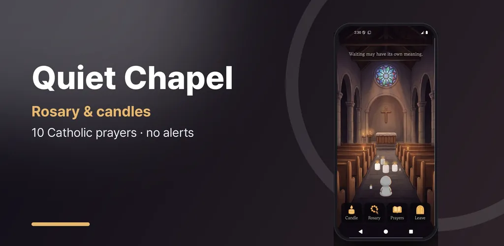
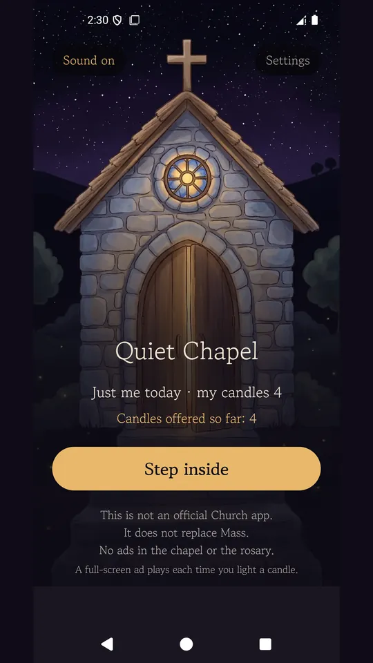
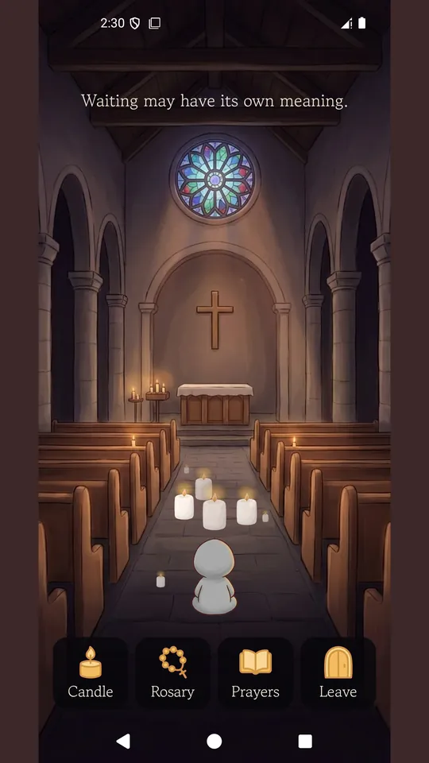
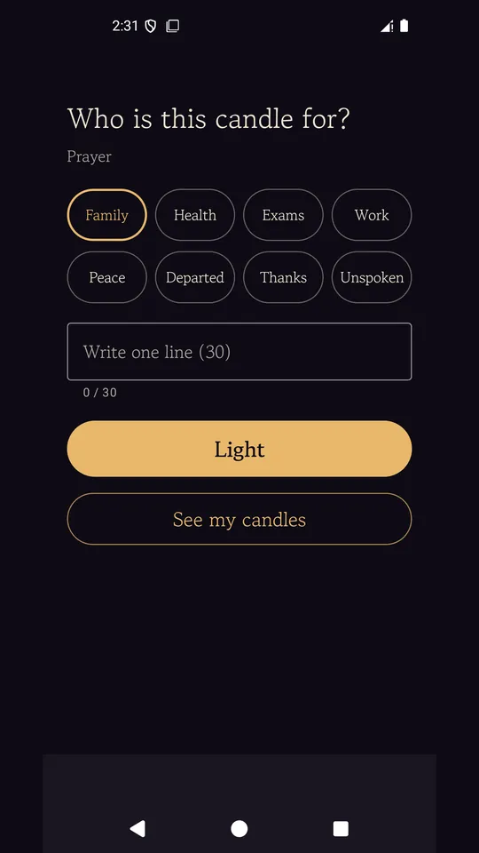
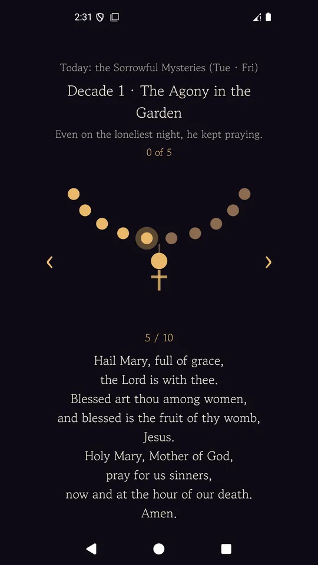
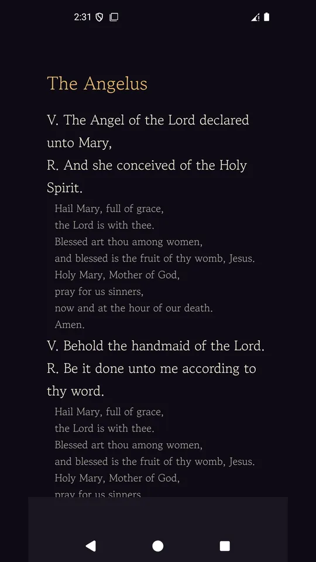
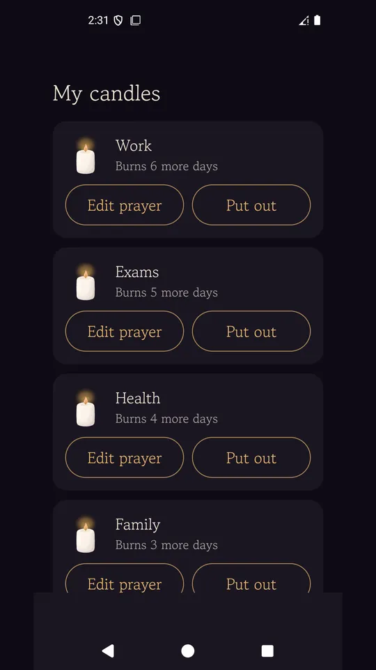

Rosary & Candle: Quiet Chapel
Pray the rosary, read 10 Catholic prayers and light a candle that burns 7 days.







About this app
Quiet Chapel is a place to sit for a moment in a still, quiet nave.
No one hurries you. Light a candle, pray the rosary, or simply sit and leave when you are ready.
Light a candle that burns for 7 days
Choose who the prayer is for (Family, Health, Exams, Work, Peace, Departed, Thanks, Unspoken) or write your own line, then light the candle.
It burns for 7 days, and when you come back it is still glowing in front of your seat. You can light one a day, up to seven at once.
What you write stays on your phone and is never sent anywhere. You can edit it or put the candle out at any time.
If you like, keep it as a candle card image to save to your gallery or send to someone.
The rosary, one bead at a time
The mystery of the day (Joyful, Luminous, Sorrowful, Glorious) is chosen for you. Tap the screen to move to the next bead, with the prayer shown alongside.
Your progress through all 5 decades is saved, so you can pick up where you left off. The short vibration on each bead can be turned off in Settings.
10 traditional Catholic prayers
The Our Father, Hail Mary, Glory Be, Apostles' Creed, the Angelus and more, in large, easy-to-read text.
Each prayer keeps its traditional wording.
A quiet nave
Soft classical instrumental music (public-domain recordings) plays only inside the nave while candles flicker. You can turn sound off on the very first screen, and it stops as soon as you leave the app.
The number of visitors and candles today shows real totals only. No made-up numbers.
The app sends no notifications.
Please note
This is not an official church app, and it does not replace Mass or the sacraments.
There are no ads in the nave or on the rosary screen. Google AdMob ads appear on the entrance, candle and prayer screens.
No payments, subscriptions or donations.
Android · free with ads · Developer: RealTunaLove · Store listing in 17 languages